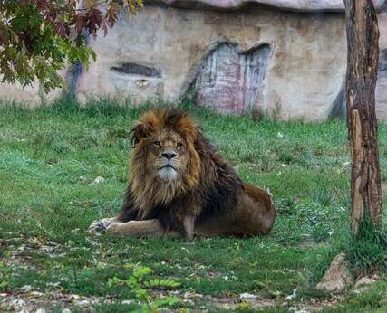

I'm Liam Erickson, a computer science major.
Blog post
Taylor Swift at NFL Games - A Win For Everyone
Suddenly, football media blew up, Kansas City Chiefs and NFL viewership skyrocketed, and many new fans started watching football for the first time in their lives.
Read
Video
Taking Care of Vinyl Records
Easy YouTube short to help teach the best ways for caring for vinyl records and the record player.
Watch
Podcast
Crash Course in Efficient Transportation at Virginia Tech
This Crash Course into transportation at VT is your go to for all the information anyone might need to know the best ways for navigating the chaotic Virginia Tech campus.
Listen